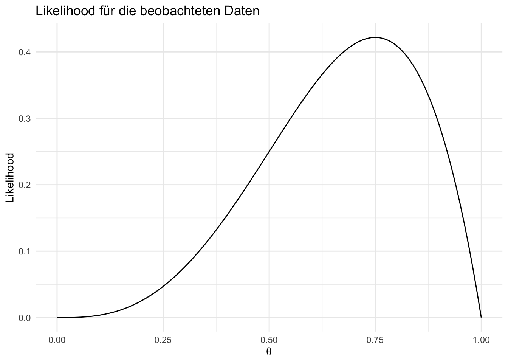
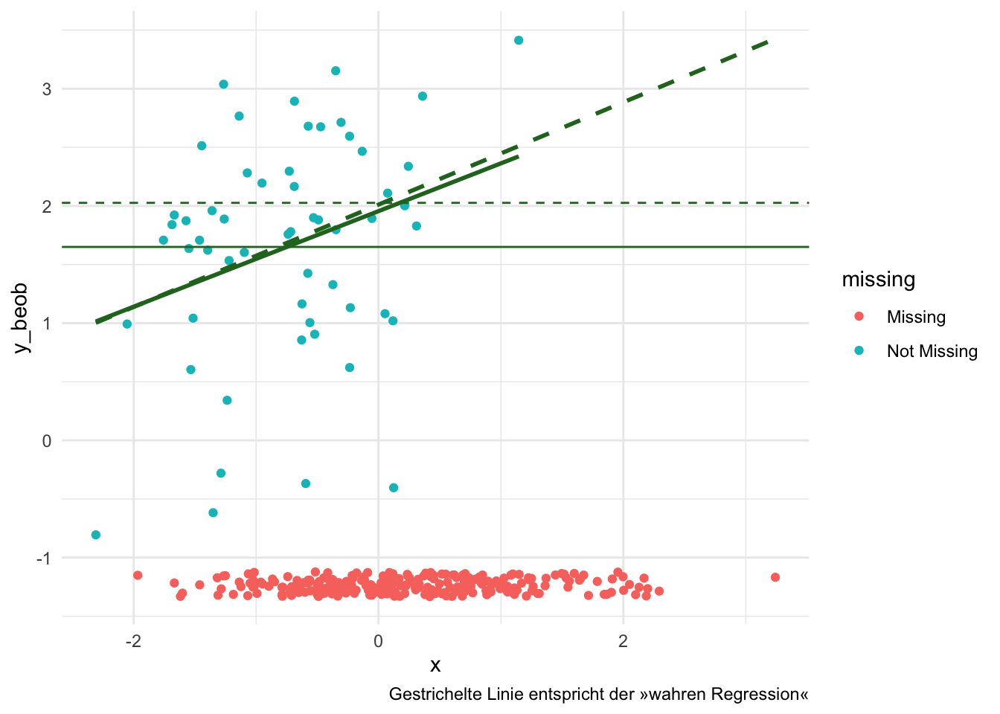

In Pfad- und Strukturgleichungsmodellen (SEM) ist die Maximum-Likelihood-Schätzung (ML) eine der am häufigsten verwendeten Methoden zur Schätzung von Modellparametern. ML basiert auf der Idee, die Werte der Modellparameter so zu wählen, dass die Wahrscheinlichkeit der beobachteten Daten maximiert wird. Es liegen also Daten vor, ein Datengenerierender Mechanismus wird dazu angenommen, aber die Werte der Modellparameter sind unbekannt.
NoneBeispiel
Eine Münze wird 4 mal geworfen und es werden 3 mal Kopf und 1 mal Zahl beobachtet. Der Münzwurf (Bernoulli-Verteilung) wird als datengenerierender Mechanismus angenommen, aber die Wahrscheinlichkeit für Kopf \(\theta\) ist unbekannt. Die Likelihood für die beobachteten Daten (3 Kopf, 1 Zahl) lässt sich mit einem Bäumchen bestimmen und ist \(L(\theta) = 4 \cdot \theta^3 \cdot (1-\theta)^1\). Plottet man nun diese Likelihood gegen \(\theta\), so erhält man den folgenden Graphen:
library(ggplot2)theta <-seq(0, 1, by =0.01)likelihood <-4* theta^3* (1- theta)^1data <-data.frame(theta, likelihood)ggplot(data, aes(x = theta, y = likelihood)) +geom_line() +labs(title ="Likelihood für die beobachteten Daten",x =expression(theta),y ="Likelihood") +theme_minimal()

Dort kann man erkennen, dass wie erwartet die Likelihood für \(\theta = 0.75\) maximiert wird. Die Maximum-Likelihood-Schätzung für \(\theta\) ergibt also 0.75.
Auf dieser Idee basieren sehr oft die Bestimmung von Modellparametern in Pfad- und Strukturgleichungsmodellen. Der Likelihood basierte Umgang mit fehlenden Werten erweitert dieses Prinzip, indem zusätzlich zu den unbekannten Modellparametern auch die fehlenden Werte so gewählt werden, dass die Likelihood der beobachteten Daten maximiert wird.
Umsetzung in {lavaan}
Wir starten eine Intuition für den Likelihood basierten Umgang mit fehlenden Werten, indem wir
ein einfaches Pfadmodell (Regressionsmodell)
basieren auf minimalen, artifiziellen Daten
auf
den vollständigen Daten,
nach Listwise Deletion und
mit dem Likelihood basierten Umgang mit fehlenden Werten schätzen und die Ergebnisse vergleichen.
library(lavaan)
This is lavaan 0.6-21
lavaan is FREE software! Please report any bugs.
library(tibble)library(naniar)set.seed(123)N <-300data_mar <-tibble(x =rnorm(N),# 0.5 ist die Stärke des Zusammenhangs zwischen x und y_compy_comp =2+0.5* x +rnorm(N),# Die Wahrscheinlichkeit, dass y_beob fehlt, hängt von x abr =rbinom(N, 1, prob =plogis(2+1.5* x)),y_beob =ifelse(r ==0, y_comp, NA),y_mis =ifelse(r ==1, y_comp, NA) )# Plot der randverteilungen von beobachteten und fehlenden Wertenggplot(data_mar, aes(x = x, y = y_beob)) +geom_miss_point() +# Regression der beobachteten Wertegeom_smooth(method ="lm", se =FALSE, color ="#267326") +# Regression aller Werte (inkl. fehlende Werte, die hier als NA dargestellt werden)geom_smooth(aes(y = y_comp),method ="lm",se =FALSE,color ="#267326",linetype ="dashed" ) +# mean(y_comp)geom_hline(yintercept =mean(data_mar$y_comp, na.rm =TRUE),linetype ="dashed",color ="#267326" ) +# mean(y_beob)geom_hline(yintercept =mean(data_mar$y_beob, na.rm =TRUE),color ="#267326" ) +labs(caption ="Gestrichelte Linie entspricht der »wahren Regression«") +theme_minimal()
`geom_smooth()` using formula = 'y ~ x'
Warning: Removed 244 rows containing non-finite outside the scale range
(`stat_smooth()`).
`geom_smooth()` using formula = 'y ~ x'

parameterEstimates(sem('y_comp ~ 1', data = data_mar))
lhs op rhs est se z pvalue ci.lower ci.upper
1 y_comp ~1 2.026 0.062 32.859 0 1.905 2.147
2 y_comp ~~ y_comp 1.141 0.093 12.247 0 0.958 1.323
parameterEstimates(sem('y_beob ~ 1', data = data_mar, missing ="listwise"))
lhs op rhs est se z pvalue ci.lower ci.upper
1 y_beob ~1 1.650 0.127 12.954 0 1.401 1.900
2 y_beob ~~ y_beob 0.909 0.172 5.292 0 0.572 1.246
parameterEstimates(sem.auxiliary('y_beob ~ 1', data = data_mar, missing ="fiml", aux =c("x")))
![]()